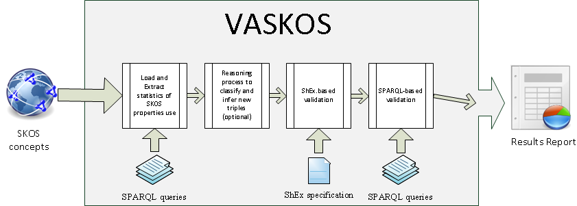

VASKOS (VAlidation of SKOS based vocabularies) by UC3M
VASKOS...
A brief introduction to the SKOS validator.
In a nushell...
It implements a step-based validation process as next Figure shows:

What VASKOS validates...
VASKOS has been designed to address some of the constraints that have been published in the SKOS Core specification.
To do so three different approaches have been carried out:
- Use of a semantic-based reasoner to classify, check consistency and infer new triples in SKOS-based vocabularies.
- Use of ShEx to define the shape
of a
skos:Conceptandskos:ConceptScheme. - Use of SPARQL 1.1 queries to check some integrity constratints in SKOS-based vocabularies.
ShEx schema...
The shape created to validate SKOS-based vocabularies is available in the Github repository. You can check it out here (ShEx shapes).
SPARQL queries...
In the same way, the SPARQL queries used to check some constraints of SKOS are also available in the Github repository.
Moreover we have also included some SPARQL queries to easily extract statistics.
SKOS constraints...
We follow this process to check the next contraints extracted from the SKOS specification:
| # | Description | Type of checking |
|---|---|---|
| S1 |
skos:Concept is an instance of owl:Class.
|
Reasoner and ShEx |
| S2 |
skos:ConceptScheme is an instance of owl:Class.
|
Reasoner and ShEx |
| S3 |
skos:inScheme, skos:hasTopConcept and skos:topConceptOf
are each instances of owl:ObjectProperty.
|
Reasoner and ShEx |
| S4 |
The rdfs:range of skos:inScheme is the class skos:ConceptScheme.
|
ShEx |
| S5 |
The rdfs:domain of skos:hasTopConcept is the class skos:ConceptScheme.
|
ShEx |
| S6 |
The rdfs:range of |
ShEx |
| S7 |
skos:topConceptOf is a sub-property of skos:inScheme.
|
Reasoner and ShEx |
| S8 |
skos:topConceptOf is owl:inverseOf the property skos:hasTopConcept.
|
Reasoner |
| S9 |
skos:ConceptScheme is disjoint with skos:Concept.
|
Reasoner and ShEx |
| S10 |
skos:prefLabel, skos:altLabel and skos:hiddenLabel
are each instances of owl:AnnotationProperty.
|
Reasoner |
| S11 |
skos:prefLabel, skos:altLabel and skos:hiddenLabel
are each sub-properties of rdfs:label.
|
Reasoner |
| S12 |
The rdfs:range of each of skos:prefLabel, skos:altLabel
and skos:hiddenLabel is the class of RDF plain literals.
|
ShEx |
| S13 |
skos:prefLabel, skos:altLabel and skos:hiddenLabel
are pairwise disjoint properties.
|
SPARQL |
| S14 |
A resource has no more than one value of skos:prefLabel per language
tag.
|
SPARQL |
| S15 |
skos:notation is an instance of owl:DatatypeProperty.
|
ShEx |
| S16 |
skos:note, skos:changeNote, skos:definition,
skos:editorialNote, skos:example, skos:historyNote
and skos:scopeNote are each instances of owl:AnnotationProperty.
|
Reasoner |
| S17 |
skos:changeNote, skos:definition, skos:editorialNote,
skos:example, skos:historyNote and skos:scopeNote
are each sub-properties of skos:note.
|
Reasoner |
| S18 |
skos:semanticRelation, skos:broader, skos:narrower,
skos:related, skos:broaderTransitive and skos:narrowerTransitive
are each instances of owl:ObjectProperty.
|
Reasoner |
| S19 |
The rdfs:domain of skos:semanticRelation is the class
skos:Concept.
|
ShEx |
| S20 |
The rdfs:range of skos:semanticRelation is the class
skos:Concept.
|
ShEx |
| S21 |
skos:broaderTransitive, skos:narrowerTransitive and
skos:related are each sub-properties of skos:semanticRelation.
|
Reasoner and SPARQL |
| S22 |
skos:broader is a sub-property of skos:broaderTransitive,
and skos:narrower is a sub-property of skos:narrowerTransitive.
|
Reasoner and SPARQL |
| S23 |
skos:related is an instance of owl:SymmetricProperty.
|
Reasoner and SPARQL |
| S24 |
skos:broaderTransitive and skos:narrowerTransitive are
each instances of owl:TransitiveProperty.
|
Reasoner and SPARQL |
| S25 |
skos:narrower is owl:inverseOf the property skos:broader.
|
Reasoner and SPARQL |
| S26 |
skos:narrowerTransitive is owl:inverseOf the property
skos:broaderTransitive.
|
Reasoner and SPARQL |
| S27 |
skos:related is disjoint with the property skos:broaderTransitive.
|
Reasoner and SPARQL |
| S28 |
skos:Collection and skos:OrderedCollection are each instances
of owl:Class.
|
Reasoner and ShEx |
| S29 |
skos:OrderedCollection is a sub-class of skos:Collection.
|
Reasoner and ShEx |
| S30 |
skos:member and skos:memberList are each instances of
owl:ObjectProperty.
|
Reasoner and ShEx |
| S31 |
The rdfs:domain of skos:member is the class skos:Collection.
|
ShEx |
| S32 |
The rdfs:range of skos:member is the union of classes
skos:Concept and skos:Collection.
|
ShEx |
| S33 |
The rdfs:domain of skos:memberList is the class skos:OrderedCollection.
|
ShEx |
| S34 |
The rdfs:range of skos:memberList is the class rdf:List.
|
ShEx |
| S35 |
skos:memberList is an instance of owl:FunctionalProperty.
|
Reasoner |
| S36 |
For any resource, every item in the list given as the value of the skos:memberList
property is also a value of the skos:member property.
|
* |
| S37 |
skos:Collection is disjoint with each of skos:Concept
and skos:ConceptScheme.
|
Reasoner and ShEx |
| S38 |
skos:mappingRelation, skos:closeMatch, skos:exactMatch,
skos:broadMatch, skos:narrowMatch and skos:relatedMatch
are each instances of owl:ObjectProperty.
|
Reasoner and ShEx |
| S39 |
skos:mappingRelation is a sub-property of skos:semanticRelation.
|
Reasoner |
| S40 |
skos:closeMatch, skos:broadMatch, skos:narrowMatch
and skos:relatedMatch are each sub-properties of skos:mappingRelation.
|
Reasoner |
| S41 |
skos:broadMatch is a sub-property of skos:broader, skos:narrowMatch
is a sub-property of skos:narrower, and skos:relatedMatch
is a sub-property of skos:related.
|
Reasoner |
| S42 |
skos:exactMatch is a sub-property of skos:closeMatch.
|
Reasoner |
| S43 |
skos:narrowMatch is owl:inverseOf the property skos:broadMatch.
|
Reasoner |
| S44 |
skos:relatedMatch, skos:closeMatch and skos:exactMatch
are each instances of owl:SymmetricProperty.
|
Reasoner |
| S45 |
skos:exactMatch is an instance of owl:TransitiveProperty.
|
Reasoner and SPARQL |
| S46 |
skos:exactMatch is disjoint with each of the properties skos:broadMatch
and skos:relatedMatch.
|
Reasoner and SPARQL |
All these constraints can be found as RDF Turtle files in the Github repository.
TO DO...
As a final remak, we also plan to extend this approach to cover SKOS-XL or XSKOS specifications.
Furthermore we have also encountered some issues (maybe it is a lack of knowledge) to validate SKOS-based vocabularies using this approach:
- SPARQL 1.1 does not support the operator
disjointthat is required to validate something like constraint S13. We have implemented this operator by using sub-queries. - ShEx as a language does not support restrictions on datatype properties. We cannot express that the value of an object it is a custom datatype.
:Potassium skos:prefLabel "K"@en ; skos:notation "K"^^<ChemicalSymbolNotation> .
Other extensions could be:
- Support all RDF formats.
- Validate against an OSLC resource shape not just ShEx.
- Validate against a RDF repository or endpoint. This is not a big deal since it is only neccesary those triples that describe a
skos:Concept. - Check the compliance of existing SKOS-based vocabularies.
- Extend the parameters of the REST services.
- ...
Using the REST service...
VASKOS can be used as a command line tool but it also implements a REST interface (this web application is an example of client):
| Method | Parameters | Example |
|---|---|---|
| GET |
uri (it must be a valid URI)
|
Test example |
| POST |
data (a RDF document in Turtle syntax)
|
See the demo |
Github Repository
The source code is available in the Github project VASKOS. Any contribution will be more than welcome!

The VASKOS validator
as part of a Knowledge Reuse project
by Jose María Alvarez-Rodríguez and
the Knowledge Reuse Group is licensed under a
Creative Commons Attribution-ShareAlike 3.0 Unported License.